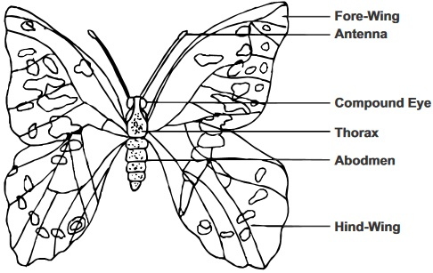
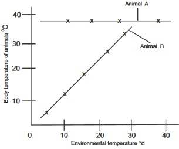

Background Information in Summary Classifying is a way of organizing information, putting objects and
ideas into groups or sets on the basis of similarities or certain criteria
(basis). The science of biological classification is called Taxonomy of
living things.
Classification will help biologists to systematically identify and study
the enormous number of living things which is estimated to be about 5
Million different species, with ease.
Linnaeus established a system of naming organisms called
Binomial nomenclature. He also established the modern levels of
classification. Binomial nomenclature is used by scientist’s world wide.
Under the system, each species of organisms is scientifically known by
two names: the Generic name first, then the name of the species e.g.
Canis familiaris for dog.
The levels of taxonomic groups are: species, genus, family,
order, class, phylum and kingdom. Plants are grouped in divisions
instead of phyla. Sometimes intermidiate levels prefixed with sub and
super like sub phylum, super class are added. Modern taxonomy
establishes classification on the basis of :Phylogeny
( evolutionary history of species ) rather than physical similarities alone.
Prokaryotes are organisms that lack nuclei and other membrane
bound organelles. Most multicellular organisms and all protists are
eukaryotic organisms with distinct nucleus bound by nucleur
membrane and membrane bound organelles. Kingdoms of living things
have evolved through different systems of classification but, the five
kingdom system of classification, though not a perfect classification,
has gained wide acceptance. It is convenient for use in keeping with
current knowledge than any other known system of classification.The
five kingdom classification are : Animals(Kingdom Animalia). Plants
(Kingdom plantae), Fungi,(kingdom fungi) protists (Kingdom
protista) and Monera (Kingdom Monera).
Monerans and Viruses
All monerans are prokaryotes. There are two major types of monerans,
the bacteria and its related forms under sub kingdom schizophytes and
the blue green algae which falls under kingdom cyanophyta.
Schizophytes are primarily heterotrophic bacteria-like organisms (note
some bacteria can be chemosynthetic which is an autotrophic made of
nutrition).
Cyanophytes are autotrophic prokaryotes that contain chlorophyll.
Bacteria affect humans by causing diseases, spoiling food, while some
are useful. For instance saprophytic bacteria, nitrogen fixing
bacteria,and bacteria that produce antibiotics.Viruses are made of
nucleic acid core surrounded by a protein capsule. All viruses reproduce
in a living medium (living cells) and use the cells machinery to make new
virus particles. Scientist are uncertain about the evolutionary origin of a
virus.
Protista
Unlike monerans, protists are eukayrotic. All protist reproduce by mitosis and cell division. Many forms also reproduce sexually.
The kingdom protista are mostly single celled unicellular organisms which cannot be classified as monerans, fungi, animals or plants.
The kingdom is divided into plant like protists and Animal like protists.
Most protist live in water and body fluids of living organisms.
The plantlike protists: the three phyla of plantlike protist are distinguished by their photosynthesis pigments, cell wall structure and
means of locomotion.
These phyla are: Euglenophyta, pyrrophyta, and chrysophyta. Pylum Euglenopyta includes Euglena, phylum pyrrophyta
includes plankton while phylum chrysophyta has diatom as one of its members.
fig2.2a: Amoeba
Animal like protists The following phyla are under the animal like protists: Phylum mastigophora e.g Trypanosoma Phylum sacodina e.g Amoeba Phylum Sporozoa e.g Plasmodium and Phylum ciliophora e.g Paramecium
fig2.2b: Paramecium
Kingdom fungi
Kingdom fungi consists of organisms that are plant like in some aspects but lack Chlorophyl.
Fungi are saprophytic or parasitic in their modes of nutrition.Most fungi have their bodies made up of hyphae which grows in a
network known as mycelium.The chitin, a cabonhydrate is a component of the cell walls of many fungi.
Fungi reproduce sexually and asexually. Its life cycles involve or include a haploid and a diploid stage. True fungi that
reproduce by forming zygospore are called zygomycetes. Examples of fungi are : Rhizopus, mushroom etc.
fig2.3: Rhizopus
fig2.4: Mushroom
The plant kingdom
Plants are eukaryotic living things that has chloroplast and can make their own food by photosynthesis. Most plants are
multicellular and non-motile. They all possess cell walls that are made up of cellulose. Plants can reproduce asexually by
vegetative reproduction or by the formation of spores. Plants can also reproduce sexually. Most plants have life cycles
characterized by alternating hapliod (sporophyte) with diploid (gametophyte) phases. A life cycle with an orderly sequence of
haploid and diploid generations is said to have alternation of generations.
The plant kingdom consists of the following divisions:
Thallophyta (algae)
The brophyta e.g mosses and liverworts
The Tracheophytes e.g ferns, conifers, and Spermatophytes.
The Thallophyta and Brophytes are Non Vascular plants while the tracheophytes are called Vascular plants.
Non Vascular plants
These are plants without specialized tissues for conducting water, food and mineral salts.
The thallophytes and Bryophytes belong to this group. Non Vascular plants do not have
true stems, roots, leaves and flowers. Their bodies can be thread like (filamentous) or flat
(thallus). They are aquatic. and they have chloroplasts.
Vascular plants (Tracheophytes)
These are plants that have truly conquered the dry land,they possess vascular tissues which enable them to transport water, mineral
salts and food. They posses true roots, stems, leaves and reproductive organs with specialized function.
There are two divisions of the tracheopytes:
(1) The pteridophytes (spore bearing vascular plants) and
(2) The spermatophytes (seed bearing vascular plants)
fig2.4:
Characteristics of some vascular plants
1. Ferns:
Gymnosperms(e.g. conifers)
Angiosperm
Horizontal stems called Rhizomes from Where leaves called fronds arise
Nacked seeds not enclosed
covered seeds within a fruit
Life cycle shows clear Alternation of Generation (sexual and asexual reproductions)
The sporophytes produce two kinds of spores microspore and megaspores
Angiosperm which are flowering plants are divided into monocotyledons and dicotyledons
Comparing monocotyledon and Dicotyledon
Feature
Dicotyledon
Monocotyledon
Embryo
Two seed Leaves
One leaf
Flower
Floral parts 4s or 5s
Floral parts in 3s
Leaves
Net vennation
Parallel venation
Roots
Tap root system
Fibrous root system
Stem structure
Vascular bundles in rings
Vascular bundles scattered
Root structure
Xylem at centre
Large pit ring of vascular Tissues
Secondary growth
Yes
None
Kingdom Animalia
Animals are multicellular heterotrophs. They all ingest food and most are motile. Animals like sponges are attached to a single spot.
They are said to be sessile. Animals are divided into vertebrates and invertebrates just for classification purpose.
Invertebrates: invertebrate are animals without back bones. Under this we have The following phyla:
Phylum porifera, e.g.sponges,
phylum coelenterate e.g. Hydra,
Phylum platyhelminthes (the flatworms) e.g. tapeworm
phylum
Aschelminthes
(round worm and Rotifers) e.g. Hookworm
phylum Annelids (the segmented worms) e.g. Earthworm.
phylum Molluscs e.g.
snail
phylum Echinodermata e.g. starfish (viii) Phylum Arthropoda e.g. insects
fig2.5a Earthworm: An annelid
fig2.5b: Butterfly: An Insect

fig2.6a Earthworm: An annelid
fig2.6b: Butterfly: An Insect
Vertebrates
Vertebrates are subphylum which belong to the phylum chordates- animals with notochords.
Three basic characteristics of chordates are:
possession of a strong flexible rod like structure called notochord at some stage of their lives
hollow dorsal nerve chord which becomes brain and spinal chord at the adult stage
Gill slit (paired openings in the wall of the pharynx) at some stage in their development.
Chordates are divided into: sub phylum urochordates; subphylum cephalochordates; and subphylum vertebrata.
Vertebrates are animals with backbones. They make up the complex organisms in the animals kingdom. Vertebrates are
divided into 7 classes: Agnatha (jawless fish); chondrichthyes (cartilage fish); osteichthyes (bony fish); Amphibia (frogs,
toads, salamanders. They are the first terrestrial animals); Reptilia (snakes, lizard, turtles, alligators); Aves (Birds: they have
feathers with body adapted to flight). Mammalia (rats, rabbits, goat, sheep, humans etc.)
fig2.4: Mushroom
Questions
1. To which of the five kingdoms of living things does each of the following organisms belong.
Organisms
Kingdom
Rose
Euglena
Bacterium
Mushroom
Frog
Fern
2. What organisms are called by the scientific name :
(a) Rana pipiens?
(b) If two animals are in the same class what other categories or groups in levels of organization of living
things will they commonly belong
to.
3.(a) What is Taxonomy of living things?
Science of biological classification
The study of plant and animal
An arrangement of living and non-living
(b) Homo in Humans is to genus as sapiens is to
Also mammalian is to class as
primates is to
4.(a) State one difference between prokaryotes and eukaryotes.
Prokaryotes have nucleus while eukariotes have none
Prokaryotes have no nuclear membrane while eukaryotes have nuclear membrane
Prokaryotes have nuclear membrane while eukaryotes have no nuclear membrane.
(b) Prokaryotic cells are found in kingdom
5. Write the classes that the following organisms belong in the spaces
provided against them.
Organisms
Classes
Mosquito
Dogs
Cat
Maiza plant
Frog
Mango
6. Write(type) the families of the following organisms in the spaces against them
Organisms
Families
Humans
Cats
Maize plants
Frogs
Monera
Work to do
1. State the two Monera sub kingdoms
i
ii
2. State two products of anaerobic breakdown of glucose by bacteria
i
ii
3. State three economic importance of bacteria
i
ii
iii
Teacher's attention required
4. Give two examples of blue green Algae
Nostoc and Oscilatoria
Euglina and clamydomonal
Volvox and spyrogira
Does a blue green algae contain chloroplast?
5. State one characteristic of a virus that makes it look like a living thing.
They are found in living thing
They can be diseases
They contain nucleic acids and protein
Project
1. Find out how a modern sewage- treatment facility works and what role bacteria play in the
operation of such a plant.
Work to do
Protists
fig2.7a:
A.
fig2.7b:
B.
fig2.7c:
C.
1. Identify diagrams A.B.C above and use them to answer questions 1 To 5
(2) Which of these organisms is a cilliate?
(3) How does the organism in diagram B obtain its food?
By photosynthesis with chloroplast and by absorption through cell membrane in absence of chlorophyl
By chemosynthesis
By sucking the food
(4) All the organisms carry out osmoregulation and excretion by means of
(5) State one thing that makes B a plantlike protista
(i)
(6) Which Organism among the protists is a carrier vector of malaria.
(b) State two feeding behaviors of fungi
(i)
(ii)
Project
1. Collect samples of water from a nearby pond or stagnant water and examine them under a microscope
draw picture of the protist you see.
More General Questions
1. which of the following does not need water to reproduce.
(a) Fern
(b) Cyad
(c) Whisk fern
(d) Conifers
(e) Conifers are to cones as angiosperm are to
(f) Name one characteristic present in ferns but not in mosses
Ferns have vascular tissue, mosses don’t have
Mosses have vascular tissue, Ferns don’t have
Ferns are plants while mosses are protists
a is the answer
(g) What two characteristics are present in Angiosperms but not in
Gynosperms
Angiosperms have cones, they also have leaves
Angiosperms have flowers; they have seeds that develop within fruits.
Angiosperms have tap root, they hav broad leaves.
2. Write 5 differences between a spore and a seed in the table below
Teacher's attention required
Spore
Seed
i
ii
iii
iv
v
3. (a) Identify the diagram in Fig.2.8 without reasons
The life cycle of mosses
The life cycle of a fern
The life cycle of a club mosses
(b) What division of plants does it belong to?
(c) Does the organisms display a clear alternation of
generation?
(d) If yes what generations are shown in the
diagram?
4. (a) Conifer is a typical example of
division
of plants.
(b) Give one example of a typical conifer
A pine
A grass
A palm
Questions on invertebrates
1. State three other characteristics other than food source that distinguish
(a) plant from an animals:
Teacher's attention required
2. Earth worm, sponges, Hydra, snail, starfish, cantipedes
(a) Write the organisms listed above in the correct phylum where each belongs just as tabulated
below:
Organisms
Phylum
1
Earth worm
2
sponges
3
Hydra
4
snail
5
starfish
6
cantipedes
2b. Draw the diagram of hydra in your practical note book show and label its external features
(diagram must not be less than 10cm long)
Teacher's attention required
fig2.4: Specimen A
3a. (I) Label the diagrams shown in specimens A according to the numbers shown and answer
the questions that follow:
1.
2.
4.
(ii) Identify specimen A without reason
(b) What class of organisms in its phylum does it belong
(c) State two habitats where the organisms can be found
(d) What type of feeding behavior does the organism exhibit
3e Write down the function of the parts labelled
Teacher's attention required
No
Name of part
Function
i
Shell
ii
Eye
iii
Tentacles
iv
Foot
4. Below are organisms labelled as specimen x,y,z,k,l,m
fig2.9b:
(a) Identify each of the organisms without reasons. Write where they
can be found:
Name of specimen
Where it can be found
X
Milipede
forest floor under leaves
Y
Centipede
under leaves and stones in moist environment
Z
Mosquito Larva
Stagnant Water
K
Grasshopper
In leaves of plants
L
Caterpillar
In leaves of plants
M
Crab
In holes in swampy environment
(b) List three differences between x and k
X
K
1
Absence of wing
wings are present
2
Numerous legs
three pairs of legs
3
Numerous segments
less number of segments
( c) Label 4 parts in specimen x and y in the diagrams
Teacher's attention required
fig2.9c
fig2.9d
(d) Label the diagram in fig 2.9c and 2.9d in the space below
(e)
(i) In what phylum can all these organisms in fig 2.9b
be found
(ii) State 3 characteristics of the phylum
Presence of hair, straight legs, single wing
Tiny legs, small heads, double eyes
Presence of exoskeleton, Joint appendages, segmented bodies
(iii) To what classes does K and Z belong
fig2.91: D
fig2.92: E
fig2.93: F
5
(a) Label the diagrams of the specimens D – F shown in figure 2.91, fig 2.92
and fig 2.93, according to the numbers. Write the functions of 3, 4, 11.
(b)
Which of the organisms belong to phylum Annelida
What type of structure of body cavity does it have
State another examples of a member of the phylum
Leaches
Hydra
Sponges
(c) Specimen E and F belong to the same class, what class do they belong
State four characteristics of animals in this class
Teacher's attention required
5b (i) In which of the organisms in specimen D-F can you find a hermaphrodite.
(i) Write two economic importance of each of the organisms in the specimen D-F as shown below:
Teacher's attention required
Specimen
Economics importance
D
E
F
1a. In the life cycle of the earthworm, when it is cut into two halves one half can usually grow the
missing parts to form the complete worm. What can this be called?
Use this diagram in figure 2.94 to answer questions 1b to 1e.
1b Identify the stage the meat inspector finds when he examines infected meat
(c) What is this stage called ?
(d) What mode of nutrition does tape worms carry out
(e) What stage is found in the gut of a Man
fig2.94 Life cycle of a tapeworm
(2a) What adaptive features enable the tapeworm to attach itself to the intestine or gut
of its host.
Throat and mouth
Hooks and suckers at the scolex(head)
Body segments and mouth
(2b) Among the tapeworms species, Teania solium is to pork (pig meat) as Teaniaseginata
is to a
(2c) Elephantiasis can be caused by a parasite which belong to the phylum
(2d) Write three economic importance of a cockroach
Teacher's attention required
Quetions: Fishes
2a State three difference between a bony fish and a cartilagenous fish
Teacher's attention required
Bony fish
Cartilagenous fish
1
2
3
1a Label all the external features shown in the diagram of a fish below:
Teacher's attention required
1b What type of fish is shown in Fig. 2.95
1c Among fishes that have teeth, what type of dentition do they have
1d State the functions of the following in a fish
Teacher's attention required
Name
Function
i
Gills
ii
Lateral line
iii
Swim bladder
iv
Dorsal and anal fins
v
Pectoral and pelvic fins
vi
Tail fin
vii
Operculum
fig2.95
Draw the Fish fig 2.95 again in your practical note book and position the labelling lines as required under
practical condition
2b State five features that help a fish adapt to aquatic life
Teacher's attention required
EXERCISES: Amphibians
fig2.96:
1.a Identify the organism in the diagram in fig 2.96 without giving
reason
1.b what class of vertebra does it belong to?
1.c Write two other vertebrae that belong to the same class with it.
(i) Lizard (ii)turle
(i)Snake and (ii)Snail
(i) Newts (ii) Salamander
2a Write the names of the parts labelled 1-7 and write the functions of 1-5 as tabulated below
Teacher's attention required
Names
Function
1
2
3
4
5
6
7
8. Tabulate two differences and similarities between a fish and a tadpole as shown below in the
table.
Teacher's attention required
Differences
Fish
Tadpole
1
2
Similarites
Fish
Tadpole
1
2
fig2.97: Salamander
10. Write the class the organism in figure 2.97 belong
11. Write two differences between the organism and a lizard
Teacher's attention required
Reptiles
1. a Identify the organisms in fig 2.98a and b drawn below
without reasons.
b. What subphylum do they belong to
c. State three other organisms that are in the same class with
them.
Snake, Crocodiles, Alligator
Frog, Toad, Salamander
Fish, Frog, Tadpole
2. a. The organisms in the diagram in fig2.98b is oviparous what
does this mean
b. State two types of habitats these organisms can be found and
two adaptive features that enable them to fit into their
habitats.
Teacher's attention required
3a Why is internal fertilization important for terrestrial animals like
lizards
Teacher's attention required
fig2.98a:
fig2.98b:
Aves
1. The following names in the table below as some of1he external and
internal feature of a bird. Write their functions on the
right Columns against them.
Features
Function
1
Down feathers
2
Contour feathers
3
Quill feathers
4
Gizzard
5
Air seas
6
Shell
7
Beak
(a) Identify specimen A B C without reasons.
A
A
B
B
C
C
MAMMALS
Below in figure 2.982A is a specimen diagram showing a typical mammal.
Use the diagram to answer questions a-c. 1a. Label the diagram.
1b The animal is homiothermic. What does this mean?
Teacher's attention required
What order of mammals does the organism belong to?
2a what type of dentition does mammals have?
2b The fore and hind limb of vertebrates are built according to a
basic pattern called
2c How many parts is the body cavity of animals divided into?
3aWhat type of body cavity is found in mammals ?
3b State two characteristics mammals have in common with
birds
Warm bloodedness; internal fertilization; Four chambered heart
Joint legs; Two chambered heart, external fertilization
Oviparity, Streamline bodies, Aquatic life
Which two groups of placental mammals have teeth that grow
continually
3c Rabbits among mammals are classified as Lagoomorphs why
aren’t they classified as rodents?
Teacher's attention required
How many orders are placental mammals divided into?
State four characteristic features common to all mammals.
Teacher's attention required
4c Mammals nourish their young ones with milk from
their
5. The organisms in figure 2.982B is a horse. What order of
mammals does it belong to?
Write two differences between such order of mammals and primates
Teacher's attention required
1988 SSCE BIOLOGY PRACTICAL QUESTION
7. Study the diagram below (a) (i) Identify the organism illustrated in the diagram
(ii) Give two reasons for your answer
Teacher's attention required
(b) (i) Name the parts labeled A to D
(ii) State the function of one of the labeled parts
1. State two structural differences between the nymph of cockroach and an adult cockroach.
Teacher's attention required
3 Give a reason why the testis in most mammals are located outside the body cavity.
Teacher's attention required
4. State the structure used by each of the following organisms for movement:
A
Amoeba
B
Euglena
C
Paramecium
June 1997 Biology 1 practical
Specimen A
Specimen B
(a) (i) Identify specimens A and B without giving reasons,
What are the possible habitats of A and B?
Teacher's attention required
Remove the wings of specimen A and make a large labelled drawing 12cm to 15cm long of it.
( Draw in your biology practical note book)
June 1993 SSCE Biology 1 Practical question q3
3. List two structural modification of one named bird which feeds on (a) Necter (b) Flesh
Teacher's attention required
SSCE NOV 1989 Biology 1 practical question 9 a,b,c.
9.
(a) Name the organism represented in the diagram above
(b) Name the structure labelled X
(c) Into what stage would the organism develop?
SSCE NOV 1990 BIOLOGY 1 PRACTICAL QUESTION 10
10. The graph below illustrates the changes in the body temperature of two animals A and B at
different environmental temperatures. Study the graph carefully and use it to answer
questions (a) to (c). (a) From the graph, make deductions on the effect of the environmental
temperature on the body temperature of the animals indicated as : (i) A (ii) B
Teacher's attention required
(I)
A
(ii) B

(b) Suggest one way by which the animal indicated
as B can maintain its body temperature or prevent its
body from over heating.
(c) Give one example each of an animal whose
body temperature can be similarly affected by
environmental temperaturs as: (i) Animal A
(ii) Animal B.